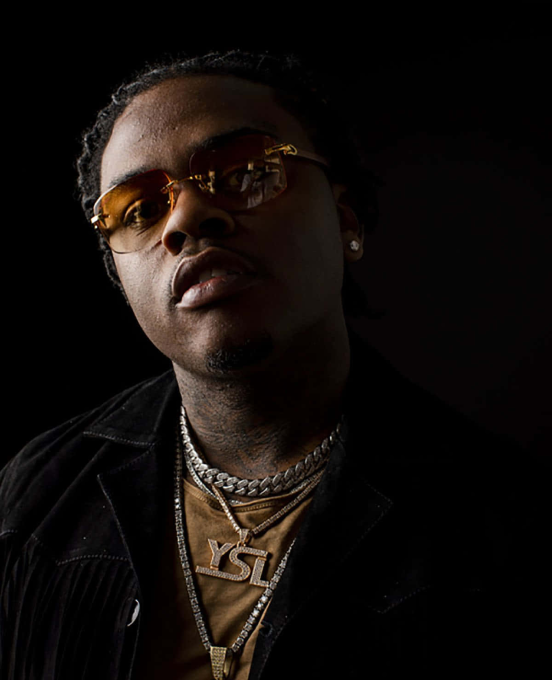

Gunna
Atlanta Rapper
Qui est Gunna ?
Gunna est un rappeur américain originaire d'Atlanta, en Géorgie. Il est né le 14 juin 1993 sous le nom de Sergio Kitchens et a grandi dans le quartier de Jonesboro, au sud d'Atlanta.
Un style musical différent
J'ai découvert le rappeur Gunna avec sa musique la plus connue "Drip Too Hard" mais j'ai réellement commencé à le suivre avec son album "Drip or Drown 2". J'ai directement aimé ses instrumentales calmes mais entrainantes. Ma musique préférée de cet artiste est "MET GALA". Cette musique illustre bien son univers.
Ses débuts
Gunna a commencé à écrire et à rapper à l'âge de 15 ans, mais sa carrière musicale n'a réellement décollé qu'en 2016 lorsqu'il a rencontré le rappeur Lil Baby, également originaire d'Atlanta. Les deux artistes ont rapidement développé une amitié et une complicité musicale, qui a abouti à des collaborations fructueuses.
En 2017, Gunna sort son premier projet "Drip Season" qui comprend des collaborations avec des artistes tels que Young Thug, Lil Yachty et Playboi Carti. Cette mixtape rencontre un certain succès et permet à Gunna de se faire connaître sur la scène rap américaine.
Discographie
Gunna a ensuite enchaîné les projets avec une série de mixtapes intitulées "Drip Season 2" et "Drip Season 3" en 2017 et 2018. En 2018, il sort également son premier album studio "Drip Harder", en collaboration avec Lil Baby. L'album rencontre un succès critique et commercial, se classant à la quatrième place du Billboard 200 et étant certifié disque de platine par la RIAA.
En 2019, Gunna sort son deuxième album studio intitulé "Drip or Drown 2", qui connaît un succès encore plus important que son prédécesseur. L'album se classe en deuxième position du Billboard 200 et est certifié disque d'or. L'année suivante, Gunna sort un autre album intitulé "Wunna" qui se classe en première position du Billboard 200.
Albums
Voici la liste des albums de Gunna:
- Drip Season 3 (2018)
- Drip Harder (with Lil Baby) (2018)
- Drip or Drown 2 (2019)
- Wunna (2020)
- Drip Season 4 (2022)
Ses collaborations
Gunna est également connu pour ses collaborations avec d'autres artistes de renom tels que Travis Scott, Drake, Future et Lil Uzi Vert. Son style unique a fait de lui l'une des voix les plus reconnaissables du rap américain actuel.
Autres
En dehors de la musique, Gunna est également connu pour son style vestimentaire distinctif, qui comprend souvent des vêtements de marque de luxe tels que Gucci et Balenciaga. Il est également un collectionneur passionné de montres de luxe et de voitures de sport.
Au fil des ans, Gunna est devenu une figure influente de la scène rap américaine et continue de produire de la musique innovante et captivante. Sa capacité à créer des mélodies accrocheuses et à raconter des histoires personnelles dans ses chansons a permis à son public de se connecter avec lui de manière profonde et authentique.